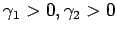

Inhalt Index DeskTop Bronstein

 Funktionalanalysis Normierte Räume Begriff des normierten Raumes
Funktionalanalysis Normierte Räume Begriff des normierten Raumes


In der Klasse aller linearen metrischen Räume sind gerade diejenigen normierbar, d.h., mit Hilfe der Metrik kann durch eine Norm eingeführt werden, deren Metrik den Bedingungen (12.82a) und (12.82b) genügt.
Zwei normierte Räume  und Y heißen normisomorph, wenn es eine bijektive, lineare Abbildung mit gibt.
und Y heißen normisomorph, wenn es eine bijektive, lineare Abbildung mit gibt.
Seien und zwei Normen auf einem Vektorraum  , die
, die  zu dem normierten Raum bzw. machen. Die Norm heißt stärker als die Norm
zu dem normierten Raum bzw. machen. Die Norm heißt stärker als die Norm  , wenn es eine Zahl
, wenn es eine Zahl  mit
mit  gibt. In diesem Falle impliziert die Konvergenz einer Folge
gibt. In diesem Falle impliziert die Konvergenz einer Folge  zu x im Sinne der Norm , also , ihre Konvergenz zu x im Sinne der Norm
zu x im Sinne der Norm , also , ihre Konvergenz zu x im Sinne der Norm  , also .
, also .
Zwei Normen nennt man äquivalent, wenn es zwei Zahlen  gibt, so daß für gilt.
Auf einem endlichdimensionalen Vektorraum sind alle Normen äquivalent.
Unter einem Teilraum eines normierten Raums versteht man einen abgeschlossenen linearen Teilraum.